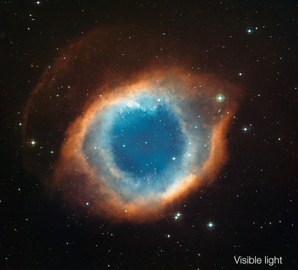

MAGLINE
zvezdane jaslice
Maglina (lat. nebula – „oblak”) je oblak u vasioni sastavljen od prašine i gasova. Nekada, dok se nije poznavao dobro Mlečni put i prostor van njega, naziv maglina se odnosio na bilo koji difuzni objekat sa stalnim položajem na nebu, što uključuje galaksije izvan Mlečnoga puta, zvezdana jata, i objekte koje danas nazivamo magline. Plamena maglina (Flame Nebula) Magline se svrstavaju u sledeće klase: Difuzne magline su magline sa slabo definisanim i difuznim granicama. Većina maglina ima ovakve karakteristike. Emisione magline sadrže gas koji je jonizovan od strane zvezde koja se nalazi u njihovoj blizini. HII regioni su oblasti u kojima se rađaju zvezde ili nalaze vrlo mlade zvezde i koje intenzivno jonizuju svoju okolinu. Nove zvezde formiraju se kada veoma difuzni molekularni oblaci počinju da se sažimaju pod uticajem sopstvene gravitacije usled neke perturbacije, kao što je, recimo, eksplozije obližnje supernove. Oblak se sažima i ponekad formira čak na stotine novih zvezda. Novonastale zvezde jonizuju okolni gas i proizvode emisionu maglinu. Planetarne magline nastaju oko zvezde koja odbaci svoj omotač i tada maglina uglavnom podseća na orbitu planete usled svog kružnog oblika. Pa je ovaj tip maglina dobio ime na osnovu ove analogije. Za ovu vrstu maglina može se reći da nisu difuzne po svom obliku. Refleksione magline su osvetljene svetlošću obližnjih zvezda koju reflektuju. Kako se plava boja najlakše reflektuje, ove magline uglavnom izgledaju plavičasto. Kao primer, možemo uzeti magličasti prostor unutar zvezdanog jata Plejada. Tamne magline sadrže međuzvezdanu prašinu koja apsorbuje svetlost, pa tako mogu prekriti objekte koje se nalaze iza njih; recimo deo neke svetle magline ili neke obližnje zvezde. Jedna od poznatijih tamnih maglina je maglina Konjska glava u Orionu. Ostaci supernovih. Posle eksplozije supernove, od materijala koji je izbačen eksplozijom nastaje maglina koja se vremenom širi u prostoru. Poznat primer je, recimo, Rak maglina u sazvežđu Bik. Protoplanetarne magline su magline koje čine mlada zvezda sa svojim protoplanetarnim diskom iz kojeg će nastati planetarni sistem. Većina maglina je ogromne veličine; neke imaju prečnik stotina svetlosnih godina. Maglina koja je vidljiva ljudskom oku sa Zemlje bi izgledala veća, ali ne svetlija, iz blizine. Maglina Orion, najsjajnija maglina na nebu i koja zauzima površinu dvostruko veću od ugaonog prečnika punog Meseca, može se videti golim okom, ali je promakla ranim astronomima. Iako su gušće od prostora koji ih okružuje, većina maglina je daleko manje gustoće od bilo kog vakuuma stvorenog na Zemlji – magličasti oblak veličine Zemlje imao bi ukupnu masu od samo nekoliko kilograma. Mnoge magline su vidljive zbog fluorescencije izazvane sadržanim vrućim zvezdama, dok su druge toliko difuzne da se mogu otkriti samo uz duge ekspozicije i posebnim filterima. Neke magline su promenljivo osvetljene promenljivim zvezdama T Bika. Magline su često regioni za formiranje zvezda, kao na primer u „Stubovima stvaranja“ u maglini Orao. U ovim regionima, formacije gasa, prašine i drugih materijala se „skupljaju“ zajedno da formiraju gušće regione, koji privlače dalju materiju, i na kraju će postati dovoljno gusti da formiraju zvezde. Tada se veruje da preostali materijal formira planete i druge objekte planetarnog sistema.  Istorija posmatranja Deo magline Karina Oko 150. godine nove ere, Ptolomej je zabeležio, u knjigama VII–VIII svog Almagesta, pet zvezda koje su izgledale maglovito. Takođe je primetio oblast magline između sazvežđa Velikog medveda i Lava koja nije povezana ni sa jednom zvezdom. Prvu pravu maglinu, za razliku od zvezdanog jata, pomenuo je persijski astronom Abd al-Rahman al-Sufi, u svojoj Knjizi fiksnih zvezda (964). On je primetio „mali oblak“ gde se nalazi Andromedina galaksija. Takođe je katalogizovao zvezdano jato Omikron Velorum kao „magličastu zvezdu“ i druge magličaste objekte, kao što je Brokijevo jato. Supernovu koja je stvorila Rakovu maglinu, SN 1054, posmatrali su arapski i kineski astronomi 1054. godine. Godine 1610, Nikolas-Klod Fabri de Pejresk je pomoću teleskopa otkrio Orionovu maglinu. Ovu maglinu je takođe posmatrao Johan Baptist Cisat 1618. Međutim, prva detaljna studija Orionove magline je izvedena tek 1659. godine, od strane Kristijana Hajgensa, koji je takođe verovao da je on prva osoba koja je otkrila ovu maglinu. Edmond Halej je 1715. objavio spisak od šest maglina. Ovaj broj se konstantno povećavao tokom veka, a Žan-Filip de Šezo je sastavio listu od 20 (uključujući osam ranije nepoznatih) 1746. Od 1751. do 1753. godine, Nikola Luj de Lakaj je katalogizovao 42 magline sa Rta dobre nade, većina kojih su ranije bile nepoznate. Šarl Mesije je zatim sastavio katalog od 103 „magline“ (sada se zovu Mesijeovi objekti, koji obuhvataju ono što je sada poznato kao galaksije) do 1781; njegovo interesovanje je bilo otkrivanje kometa, i to su bili objekti koji bi se mogli pogrešno smatrati njima. Broj maglina je tada znatno povećan naporima Vilijama Heršela i njegove sestre Kerolajn Heršel. Njihov Katalog hiljadu novih maglina i klastera zvezda objavljen je 1786. Drugi katalog od hiljadu je objavljen 1789, a treći i poslednji katalog od 510 pojavio se 1802. Tokom većeg dela njihovog rada, Vilijam Heršel je verovao da su ove magline bile samo nerazjašnjena jata zvezda. Međutim, 1790. godine otkrio je zvezdu okruženu maglinom i zaključio da je to prava maglina, a ne neko udaljenije jato. Počevši od 1864. godine, Vilijam Hagins je ispitivao spektre oko 70 maglina. On je otkrio da otprilike trećina njih ima emisioni spektar gasa. Ostatak je pokazao kontinuirani spektar i stoga se smatralo da se sastoji od mase zvezda. Treća kategorija je dodata 1912. godine kada je Vesto Slajfer pokazao da se spektar magline koja okružuje zvezdu Merop poklapa sa spektrom otvorenog jata Plejada. Tako maglina zrači reflektovanom zvezdanom svetlošću. Oko 1923. godine, nakon Velike debate, postalo je jasno da su mnoge „magline“ zapravo galaksije daleko od naše. Slajfer i Edvin Hubl su nastavili da prikupljaju spektre iz mnogih različitih maglina, pronalazeći 29 koje su pokazale emisione spektre i 33 koje su imale kontinuirani spektar svetlosti zvezda. Godine 1922, Habl je objavio da su skoro sve magline povezane sa zvezdama, a njihovo osvetljenje dolazi od svetlosti zvezda. Takođe je otkrio da su magline emisionog spektra skoro uvek povezane sa zvezdama koje imaju spektralnu klasifikaciju B ili toplije (uključujući sve zvezde glavnog niza O tipa), dok se magline sa kontinuiranim spektrom pojavljuju sa hladnijim zvezdama. Habl i Henri Noris Rasel zaključili su da su magline koje okružuju toplije zvezde transformisane na neki način.